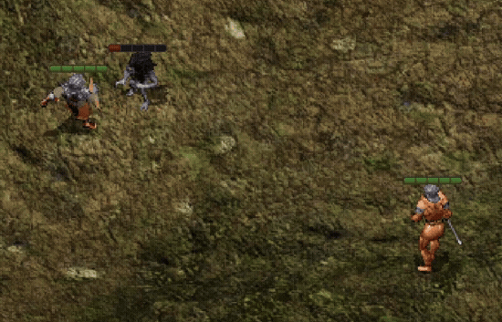

Project Javelin
A Gibberlings Three Mod
Author: CamDawg
On the web: Home page, discussion forum, and Discord
Version Beta 1
Languages: English
Platforms: Windows, macOS, Linux
GitHub: Gibberlings3/Project_Javelin
Project Javelin introduces a new class of weaponry to the game in the form of javelins: one-handed spears that can be throw or used in melee. They use the existing spear proficiency, providing a boost to a somewhat neglected class of weapons.
Project Javelin is designed for any BG2-based Infinity Engine game. This includes the original Baldur's Gate II, the conversion projects BGT and Tutu, and all of the Enhanced Editions of Baldur's Gate, Baldur's Gate II, Icewind Dale, and the BG2EE-based EET conversion project.
At present there are no known incompatibilities. The components from IWDification and RoyalProtector's Tweaks that increase the base damage of spears will work on Project Javelin and they can be installed in any order.
In terms of install order; Project Javelin does try to modify existing stores and areas to scatter javelins throughout the game. Ideally this means Project Javelin should follow item and quest mods but does not necessarily need to be installed late in the process like a tweak mod.
If you should encounter any bugs, please report them to the authors at the Miscellaneous Released Mods forum. In addition, Project Javelin is available on GitHub, so fixes and changes can be submitted by the community.
Known issues are as follows:
- The weapon animations (melee and thrown) were adapted, pixel by pixel, from existing animations. Unfortunately the quality of my One Braincell Productions is not the match of the artistry and professionalism of One Pixel Productions, so despite my best efforts expect some jank. Improving the animations will be an ongoing effort.
First time installing a mod? Check out G3's comprehensive tutorial: A New Player's Guide to Installing and Playing Mods.
Special Note for Siege of Dragonspear from Steam/GOG 
Good Old Games (GOG) and Steam both package the additional content for Siege of Dragonspear in a method that WeiDU, the tool used to install this mod, cannot access. You must run a program called DLC Merger on your SoD installation before you can install this or any other WeiDU-based mod.
Enhanced Editions Note 
The Enhanced Editions are actively supported games. Please note that every patch update will wipe your current mod setup! If in the middle of a modded game you might want to delay the patch update (if possible) as even after reinstalling the mods, you might not be able to continue with your old savegames. Alternatively, copy the whole game's folder into a new one that can be modded and will stay untouched by game patches. It is important that you install the mod to the language version you are playing the game in. Otherwise, the dialogues of the mod will not show but give error messages.
Windows 
Project Javelin for Windows is distributed as a self-extracting archive and includes a WeiDU installer. To install, simply double-click the archive and follow the instructions on screen.
Alternatively, the files can be extracted into your game directory using 7zip or WinRAR. When properly extracted, your game directory will contain setup-cd_project_javelin.exe and the folder cd_project_javelin. To install, double-click setup-cd_project_javelin.exe and follow the instructions on screen.
You can run setup-cd_project_javelin.exe in your game folder to reinstall, uninstall or otherwise change components.
macOS 
Project Javelin for macOS is distributed as a compressed tarball and includes a WeiDU installer.
First, extract the files from the tarball into your game directory. When properly extracted, your game directory will contain setup-cd_project_javelin, setup-cd_project_javelin.command, and the folder cd_project_javelin. To install, double-click setup-cd_project_javelin.command and follow the instructions on screen.
You can run setup-cd_project_javelin.command in your game folder to reinstall, uninstall or otherwise change components.
Linux 
Project Javelin for Linux is distributed as a compressed tarball and does not include a WeiDU installer. Linux users will need to do a one-time install of WeiDU (and a few other adjustments) as described in this great writeup.
To install, run 'WeInstall cd_project_javelin in your game folder.
Note for Complete Uninstallation 
In addition to the methods above for removing individual components, you can completely uninstall the mod using setup-cd_project_javelin --uninstall at the command line to remove all components without wading through prompts.
At present Project Javelin has one component, which will tailor content to your game, e.g. IWDEE will get slightly different items than BGT or BG2EE.

Basic, unenchanted javelins have the following stats:
Javelins are light, flexible spears designed primarily as a throwing weapon. They are usually constructed of wood and tipped with a small metal spearhead. The shaft is much thinner than a two-handed spear. The javelin is a ranged weapon, intended to be thrown. While javelins can be used for melee combat, they are not sturdy enough and perform poorly.
STATISTICS:
Damage: 1d6 (thrown, missile)
Damage: 1d4 (melee, piercing)
Speed Factor: 4
Proficiency Type: Spear
Type: One-handed
Requires:
5 Strength
Weight: 3
Note that all javelins can be used as a thrown or melee weapon, but by design the melee damage is inferior—these are meant to be primarily ranged weapons. In addition to basic javelins, magical javelins are also added to the game and a complete, spoilered list of their locations is available on the G3 forums.
For issues, suggestions, praise or bile you should try contacting CamDawg. You can find out more about Project Javelin by visiting Project Javelin forum or the project page. Visit the Gibberlings Three Forums for information on this and any other Gibberlings Three mods on which we may be working.
First a huge thank you to Lava who provided all of the item icons. They look fantastic and he even provided them knowing full well I was distracting myself from working on The Calling instead... Lava also provided inspiration for a couple of the items, so thanks for that as well.
As part of the G3 Community Item Pack, I made an upgradeable javelin so that we could use it as an exercise to learn about projectiles, upgrades, and making item icons. However, as the idea rolled around my head I thought it could be a new weapon class instead of a one-off, and Project Javelin was created. The aforementioned javelin, the Evergreen Javelin, has joined the mod as the Evergreen Lance and has been fully realized.
This was more or less a nice weekend project... until I realized the weapons themselves weren't animating. At minimum, trying to make one-handed spear animations doubled (at a minimum) the work. However I think—maybe hope!—I've accomplished passable animations. Slogging through the animations has given me an even deeper appreciation of One Pixel Productions and Erephine's amazing work.
Tools Used in Creation
- WeiDU by Wes Weimer, the bigg, and Wisp
- Near Infinity by Jon Olav Hauglid, FredSRichardson, and argent77
- Notepad++, by the Notepad++ team
- WeiDU Notepad++ Highlighters by cmorgan, updated by argent77
- ConTEXT Text Editor by Eden Kirin
- WeiDU ConTEXT Highlighters by Idobek, updated by cmorgan
- IESDP maintained by igi and lynx
- bammer by Scott Brooks
The modding community for the Infinity Engine has been going strong for more than 20 years now, and is the culmination of thousands of unpaid modding hours by fellow fans of the game. Modders produce their best work and players get the best, well-supported mods when we all work together.
There are two big ways to upset this harmony. One is to claim someone else's work as your own. The second is to host and redistribute a mod without permission from the author(s).
Be kind to your fellow players and modders. Don't do either.